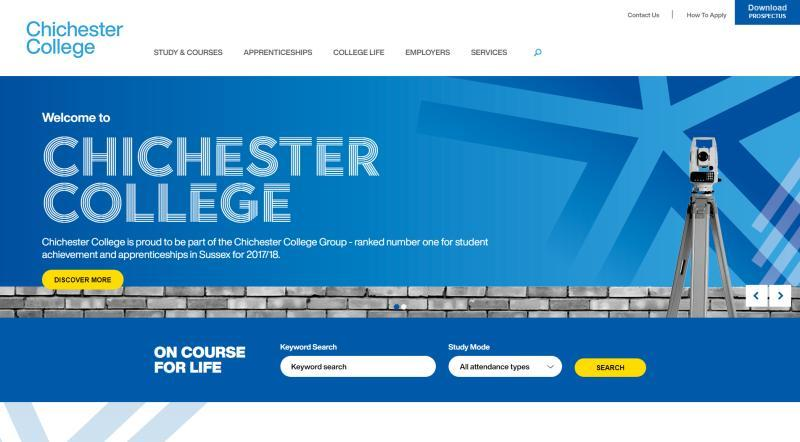
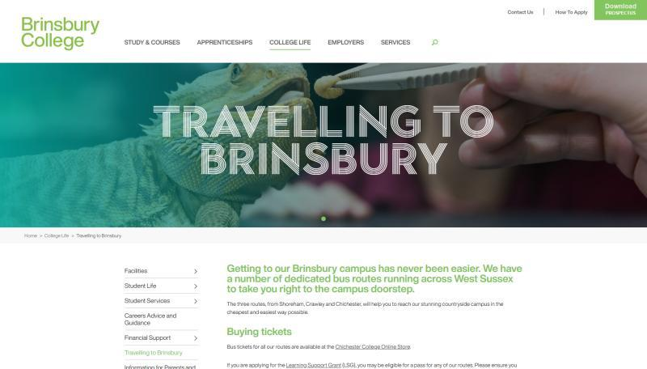
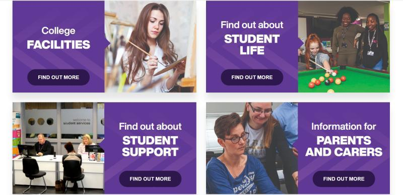
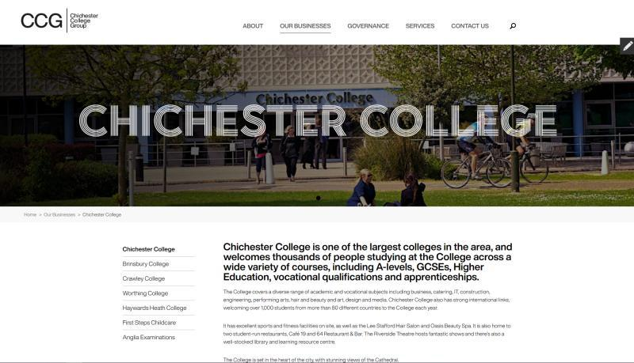

Rebuilding CCG’s websites
6 campus websites redeveloped, with one group brand and a personality for each campus




From2 unscalable websites on different platforms
To6 rebuilt, accessible websites, one group brand
The problem
At Chichester College Group (CCG), the college websites we had were fragmented, difficult to navigate, and built on legacy platforms. Brinsbury and Chichester sat on one website using Drupal, and Crawley used Sitefinity.
As Website Content Leader, I was the project lead to oversee the complete redevelopment and migration of these websites. My task was to provide technical leadership, define the agency pitch requirements, and establish a consistent, accessible content model without disrupting daily admissions.
My approach
I led the technical and content specification for the tender process, which meant evaluating digital agency bids to ensure their proposals met our accessibility and operational needs.
During development, I was the main point of contact between our leadership team, internal IT, curriculum leads, and Itineris, the external build agency. I worked directly with IT to make sure the new CMS (Sitefinity) seamlessly integrated with our backend course database and payment processing systems.
Academic teams originally wanted to lift and shift old, dense course descriptions that looked inaccessible even on the old legacy CMS. To combat this, I ran workshops showing how clear information architecture, plain English, and structured course data improved user journeys and met WCAG standards.
The outcome
I ultimately had to launch the new websites (Chichester, Brinsbury, Crawley and the group site) on 30 March 2020, which was the start of the Covid lockdown. This presented its own challenges, as I had to agree a new way of working with our IT team and external agency to make sure the launch was a success.
After launch, we took on 2 new colleges to the group: Haywards Heath and Worthing. We had built a scalable brand and platform with the launch of the other websites, so the development and delivery of these websites was much easier thanks to the foundation we had built.
I’m very proud of this project as it transformed our inconsistent website suite into an accessible, user-focused group of websites for a wide variety of audiences.